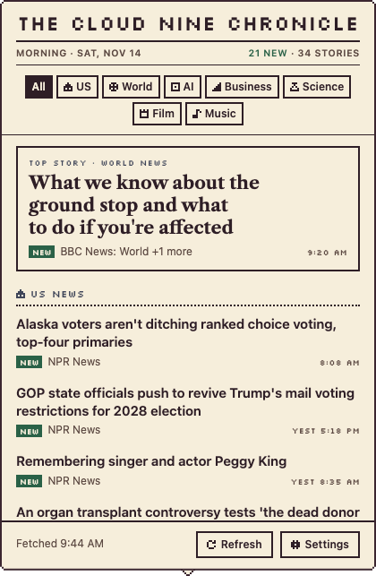
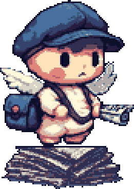
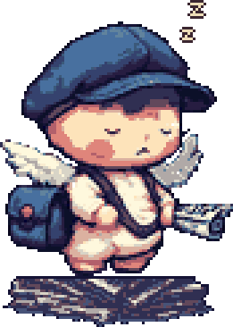
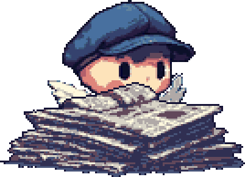

The Cloud Nine Chronicle
Click him to read the news
A few fresh headlines from sources you choose, every morning and evening.
8 AM6 PM
If you ignore him
The papers pile up

Waiting

Asleep

Buried
Your sources
Pick what you want to hear about
US newsWorld newsAI and techBusiness
ScienceFilm and TVMusicGaming
SportsBooksDesignCreative coding
Recommended sources for every topic, or add any RSS feed.
Private
It all stays on your Mac
No account, no tracking, no ads, no AI.
Install
Open the download, drag the cherub into Applications, and open him.
Download for MacUpdates itself